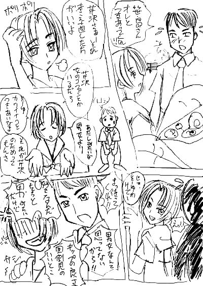
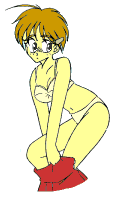
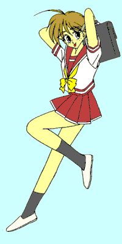

「天使のお仕事 第２話」
(Opening comic by Bokuchin)

きらりっ——と、梅雨明けの空の高みで何かが光った。「俺、いつもサッカーの試合で応援してくれる笹島さんのこと、ずっと好いなと思ってた。だから……笹島さん、俺と付き合って欲しいんだ」
ともすれば詰まりそうになりながらも、きっぱりと告げられた言葉。
だが、それを聞いたセーラー服の少女──笹島瑞樹は大げさに溜息をついてぼりぼりと頭を掻いた。
「え〜っとな、芹沢さ、それはちょっと考え直した方がいいな」
あまりにも他人事のような口調に、芹沢と呼ばれた制服の少年──芹沢秀一がその意味を理解するにはしばしの時間が必要だった。
「芹沢なら女の子のファンだっているだろ？ あたしみたいな男女より、そういう普通の女の子と付き合った方が芹沢のためさ。じゃあ、そういう事で」
背を向けた瑞樹にひらひらと手を振られるに至って、ようやく秀一は我に還った。
「ま、待ってくれ笹島さんっ！ 俺、笹島さんのこと男女なんて思ってないっ！ さっぱりしてて、面倒見がよくて、気っぷがよくて……、そりゃそういうのちょっと男みたいかもしれないけど、そういうところが……」
少々余計な事も言いながら、瑞樹を引き止めようと思わず肩に手を掛けた──その瞬間、視界が一回転し、背中を強い衝撃が襲った。
後頭部のじゃりっとした砂の感触に、自分が投げ飛ばされて仰向けに転がっているのだと理解した。呆然とした頭の隅に、瑞樹が合気道の有段者だという聞きかじりの知識が浮かぶ。
「悪かったなっ！ どうせあたしは男みたいだよっ！」
怒鳴られて見上げると、ちらちらとお星様が舞う視界の中、なにやら赤い光球が瑞樹の剣幕に気圧されるようにはじき飛ばされていくのが見えた。が、秀一にそれを気にする余裕はなかった。
「だから、それが言いたいんじゃなくて……」
「うっさいっ！ じゃあ、つまんない考えはさっさと忘れるんだぞ！」
逆さまの視界の中で、瑞樹がずかずかと歩き去っていく。背中の痛み、女の子に投げ飛ばされたショック、そして失恋の痛手が入り交じり、絶望的な嘆きのため息になって秀一の口から漏れた。
「あ〜っ畜生っ、誰が男みたいだっ！」
足早に公園から出た瑞樹は、周囲の視線も気にせずわざと声に出して怒鳴った。ぎりぎりぎりと怒りにまかせて拳を握り……、そこでふっと力を抜いて投げやりな笑みを浮かべた。この怒りは言い訳、方便にすぎない……。
「ちぇ……。らしくもない……」
電柱にもたれ掛かって小さく溜息をつく。男女──。昨日も隣の幼なじみに言われたばかりだなと思い出す。するとその途端、しぼみかけていた心が沸々とした怒りのパワーで充実してきた。
「そうだ、伊織がわりーんだ。ここはヤツに責任とらせるべきだよな」
瑞樹はにんまりと笑みを浮かべて頷き、そしてすっきりした顔つきで夕方の街を通り過ぎていった。
ちなみにそのころ、瑞樹にはじき飛ばされた赤い光球、すなわち『シード』が偶然そばを通りかかった本編主人公こと伊織の"願い"に同調吸収され、それこそ責任どころの話ではなくなる……のだが、むろんまだ瑞樹はそんなことを知る由もないのであった。
——少年少女文庫１００万Ｈｉｔ記念作品——

原作 １００万Ｈｉｔ記念作品製作委員会
第２話担当 米津
第二話 「イオちゃんの、恋のトキメキ？ 大作戦・前編」
「ねえ、伊織ちゃんってば、起きてよ」
枕元で誰かの声がする。伊織は寝起きの主人公の本能に従い(笑)、毛布をかぶって身体を丸くした。
「ん〜、あと５分だけ……」
「だ〜め。父さんが呼んでるの」
──父さん……？
せっかくかぶった毛布がはぎ取られ、おまけにつんつんと何かが頬に当たる。伊織は仕方なく重い瞼を開いた。
と、息がかかりそうな距離から頬をつつく真織のどアップ。
「うわぁぁぁぁぁっ！」
反射的に飛び起きた伊織を、ピンクのだぶだぶパジャマにお下げ髪の真織はきょとんとした顔で見つめる。
「どうしたの……、伊織ちゃん？」
「なっなっなっなんでもない……よ。ちょっとびっくりしただけ。あはははは……」
天使のヘアクリップは机の上だ。伊織は必死で寝起きの頭を回転させ、３日前からの自分……真織のいとこの早川伊織……もちろん性別、女の子……を演じた。
「変な伊織ちゃん。あのね、父さんが社務所に来てほしいんだって」
「おじさんが？」
「うん、初登校の前に色々話しときたいからって」
「そ、そう……。ありがとう」
「朝早くからごめんね、父さんお説教話とか大好きだから……。終わったら一緒に学校行こうね」
「う、うん」
真織が部屋から出て行くのを見送ったとたん、伊織はぽっと赤くなって枕を抱き寄せる。
「見、見ちゃった……。早川さんのパジャマ姿……」
自分だってパジャマ姿の女の子なのだが、伊織の幸せはそんな些細な事(笑)で水を差されたりしなかったらしい。『早川さんと一緒に学校……、この生活けっこう悪くないのかも』などと考えて安上がりにバラ色になっている。
だが、改めて辺りを見回せば、ドレッサーに、ポプリの置かれたタンスに、ピンクのカーテン。そこは見まごう事なき女の子の部屋だ。そして、極めつけは壁に掛かったセーラー服。手にとって、思わずごくりとつばを飲み込む。
「学校って、これ着てくんだよな……」
早川伊織たる自分は今日から天ヶ丘高校に転校する事になっている。クラスは従姉妹の真織と一緒。要するに、伊織は元々いたクラスに転校生の女の子として編入されるのだ。
だが、今の伊織にそんな事を反芻している余裕はない。
「あとは……、あうう…………」
タンスの一番下の引き出しを開ければ、中にはパステルカラーの下着がきれいに整頓されている。
その光景にくらっと目眩を起こす伊織だが、この部屋のどこを探したって男物の下着は出てこない。それを自分の心に言い聞かせながら、身を縮こまらせるようにしてできるだけ大人しい白のブラとショーツをつまみ上げた。
 そして、ベッドに腰掛けて複雑な面持ちで見つめる。こうして見ているだけで顔が火照ってくるというに、さらにこれを身に付けなければならないのだ。
そして、ベッドに腰掛けて複雑な面持ちで見つめる。こうして見ているだけで顔が火照ってくるというに、さらにこれを身に付けなければならないのだ。
──うう……、ヘンタイになった気分……。
本人にすれば一大事だが、傍目にはその小さな可愛らしい布きれこそ伊織が身に着けるのにふさわしい下着だ。男物などを穿いたらそれこそヘンタイ呼ばわりされてしまうだろう。最初から選択の余地などないのだ。
伊織はたっぷり一分ほど固まってから諦めてパジャマの胸元に手を掛け……、そこで再び動きが止まった。
パジャマの下の柔らかな身体が、胸の膨らみがパジャマに触れるくすぐったさや、平らな股間からお尻までぴたっと包んだショーツの優しい肌触りを、これでもかとばかりに伝えてくる。つまりこのパジャマを脱げば、その下は自分のとはいえ女の子のセミヌードなのだ。
真っ赤になりながら、それでもがんばって慣れない右前のボタンを一つ、二つ……。だが、緊張のあまりパジャマを握る左手が震え、布地が胸の先っちょをくいっと引っかけた。
「──っ！」
背中を走った電流に、思わず胸元を押さえて飛び上がった。
口元がひくひくと震えだし……
「あ゛〜っ！ やっぱりだめだ〜っ！」
机のヘアクリップをひったくるように掴んで左耳の上に留める。
すると、不思議な感覚が身体の中を通り抜けると同時に羞恥心が薄れ、まるで昔から知っていたかのように女の子の着替えの知識が浮かび上がってくる。
これで連日の３連敗。今日は精一杯がんばってみたものの、やはりヘアクリップなしで着替えることはできなかった。
「これじゃほんとに女の子になっちゃうかも……」

仕種もすっかり女の子になってパジャマを脱ぎ、自然な手つきでブラを身に着ける。そして、次はセーラー服。まだ自分の裸をまともに見る度胸はないが、クリップのさえあればこうしてよそを向いたままでも戸惑うことなく着替える事ができる。「さ〜てと、似合ってるかな」

さっそくヘアクリップに影響されてるのにも気付かず、ぴょこんと鏡をのぞき込む。そこには真新しい緋色のセーラー服に身を包んだ女の子が映っている。「きゃはっ♪」
嬌声をあげてスカートを押さえた時、男の部分が我に返った。
──はっ！ な、何やってるんだおれはっ！！
鏡の中で、スカートを押さえた女の子が見る見るうちに真っ赤になっていった。
洗面と朝食を済ませて社務所に出向いた伊織を、宮司の正装を纏った守衛が出迎えた。
「おはようございます」
「おはよう。朝早くからすまないね」
「いえ……。理由は分かりましたから」
その『理由』は例によって正座でお茶をすすっていた。
「イオちゃん、おはようですの〜」
「パラレル殿が、伊織君の大任について話をしておきたいそうなのだ」
「とぉっても大事なことなのですわ」
のほほんとした言葉からはイマイチ大事なこととは思えない。だが、元に戻るにはパラレル達だけが頼りなのだ。
伊織も頷いて座布団に座る。思わずあぐらをかき、太股やショーツ越しのお尻が座布団に直接触れる感覚にあわててスカートをなでつけて正座しなおした。
守衛は二人に一礼して社務所から出ていった。
「で、なんだよ大事な話って」
「では〜、これを見てくださいな」
パラレルはどこからともなく無数の小穴が開いた紙テープを取り出してみせる。
「なんだこれ？」
「天界が誇る電子頭脳、イグドラシルの情報ですわ〜。ほらこちらを」
パラレルが差し出した写真では、赤や緑の発光パネルだの、バチバチと放電する碍子だの、ワケのわからないレバーだのがいっぱいついた"イグドラシル"が、これまた謎のスイッチだらけのコンソールから紙テープを打ち出していた。見るからに信頼できない時代がかったシロモノだが、世代が違う(笑)伊織には何がなにやらさっぱりだった。
「まあ、深くは追求しないけど……、この紙テープがどうしたんだよ」
「ですからこれがイオちゃんの初任務ですわ。え〜とですねえ」
パラレルは紙テープを睨みながら順に手繰っていく。どうやら往年の博士よろしく紙テープを直接読んでいるらしい。
「初任務……？」
「そうですわ。街の皆さんに幸せを分け与えるというステキな任務ですわ」
「ヘタしたら一生女なのにどこがステキなんだよ……」
「心配ご無用ですわ〜。今まで数千人の天使が何百万回もの任務を果たしてきましたが、失敗したのはたったの４回だけですわ」
「４回？ ははは、なんだ、そうなんだ」
ほっとした伊織の膝に、どこからともなく現れたシリアルがひょいっと飛び乗る。
「ま、そのうち３回はパラレルが担当だったんだけどね」
四つ足のくせに器用に肩をすくめ、そのまま膝の上で丸くなった。
「こ、こらっ、ちょっと待てっ！ 三回って、ほとんど全部パラレルが失敗してるんじゃないかっ！？」
「はい、どうしてなのでしょうねえ。わたくし一生懸命がんばりましたし、ムーの方々もアトランティスの方々もそれはもういい人達ばかりだったのですが……」
両手を握り合わせてあさっての方向を見つめるパラレル。不吉な単語に蒼くなった伊織は、ひそひそ声でシリアルに尋ねた。
「おい、パラレルって本当に天使なのか？ 本当は疫病神とかじゃないのか？」
シリアルは首をすくめてため息を吐いた。
「天使で間違いないはずだけどね。……一応」
その隙にパラレルはすっかり立ち直っている。いや、そもそも悩んでなどいなかったのかもしれない。
「さあイオちゃん、過ぎた日を振り返っている場合ではありません。明日に向かって進みましょ〜」
「いや、きっと反省って大事だと思うぞ……」
「では、説明しましょう。イオちゃんは街の皆さんを幸せにするのが任務ですね〜？」
伊織は膝のシリアルに、そうなのか？と視線を送る。シリアルは、どうだかね？とでも言うようにぴくりとひげを動かした。
「ですが、普通の人にそれはちょっと大変ですわね〜。そこで〜、イオちゃんが吸収した『シード』の"想いを現実に変える力"を使うのですわ〜」
「"想いを現実に変える力"ってのは、物理法則や因果律なんかも無視して願いを実現する、まあ言ってみれば超能力だね」
「超能力？」
俄然興味をそそられ、伊織はぐっと身を乗り出す。姿形はともかくこういう所は男の子である。
「そうですわ〜。では、練習しましょうね〜。まず、右手を握って〜」
伊織は言われたとおり、右手を前にのばして握る。
「思いっきり力を込めて〜」
拳と呼ぶにはあまりに小さくて優しい手を、さらに力を込めて握りしめる。すると、その中に何か熱い脈動のようなものが感じられる。
「気合いを込めて開くっ！」
「やっ！」
ぽんっ！ 少々気合いの抜けた音と共に、一輪の小花が手のひらから現れた。
「へ？」
「はい、よくできました〜」
パラレルがその花を受け取ると、伊織の掌からひらひらと小さな万国旗が繋がっていく。
「今は、これがせいいっぱい♪」
「おまえは宮○駿かぁっ！！」
それからパラレルの教えでいろいろと力を使ってみたが、花が出てくるほかには、せいぜいコップの中の十円玉を踊らせたり、右手のハンカチが左手に移動したり……。
「あのな……、手品でみんな幸せになれるなら今頃マギー○郎は生き神様だろ……」
「あらあ、タネがないから手品ではありませんわ〜」
「そういう問題じゃない〜っ！」
もちろん、これも立派な超常現象には違いないだろう。だが、少々１０円玉が動く程度の力など世の中の役に立ちそうもない。男としての将来が懸かった伊織にとっては心許ないことこの上なかった。
シリアルが、伊織の不安などどこ吹く風とばかりと大あくびをした。
「まあ、パラレルのシードなら普段はこんなとこだね。普通の天使なら、パートナーは眉一つ動かさずに海を割ったり雷を落としたりできるんだけど」
「とほほほ……堕ちこぼれ天使のパートナーなんて……」
「だ〜いじょうぶです。大切なのはイオちゃんの真心で、力の大小ではありません。イオちゃんが本当に心の底から皆さんの幸せを願えば、その想いはきっと叶うはずですわ〜」
「そ。たとえば、伊織が今の伊織になったみたいにね」
「う……」
セーラー服を着た自分の姿を見下ろす伊織。服の上からでも胸の膨らみが感じられ、ミニスカートからは瑞々しい太股が覗いている。これが『シード』と伊織の望みによって引き起こされたのだから、その秘めた力は相当なものに違いなかった。だがしかし、これは本来の望みとはちょっと……いや、だいぶ違うような気がする。
「なかなか思い通りにはいかないかもしれませんが、イオちゃんならきっとだいじょうぶで〜す。がんばってくださいね〜」
「がんばれったって、何をどうすりゃいいのか……」
「そこでこれが役に立つのですわ〜」
パラレルは先ほどの紙テープを手ににっこりを微笑む。
「イグドラシルの力で、強い願いを持っている人を捜したのですわ。手始めに、このサッカー部の方々の願いを叶えましょ〜」
「サッカー部？ うちの学校の？」
「はい〜」
天ヶ丘高校のサッカー部は昨年できたばかりのほやほやである。昨年こそ公式戦未勝利だったが、２年目にして着実に力を付けつつあり、近々始まる県大会では初勝利どころか上位も狙えるのではないかという声も聞こえてくる。
「どうやら、キャプテンをされている御方が、失恋で失意の底に落ちてしまったようですわ〜」
「失恋？ あの芹沢が？」
サッカー部キャプテンで正ゴールキーパーでもある芹沢秀一はチーム躍進の立て役者だ。長身でルックス良し、スポーツ万能、成績優秀という完璧ぶりはクラスが違う伊織の耳にまで聞こえてきている。それこそ自分とは格が違う存在の秀一が振られてしまうなどとは、色恋沙汰に縁の薄い伊織にはにわかには信じられなかった。
「誰なんだ、その芹沢の相手って……？」
「わたくしがパートナーをお願いするつもりだった笹島瑞樹さんですわ。イオちゃんとはお友達でしたね〜」
「瑞樹ぃ！？」
「はい〜。え〜とですね……」
パラレルは事の顛末、そして、すっかり意気消沈した秀一は間近に試合を控えた休日練習でも全く身が入っていなかったこと、それを心配した部員達の願いが天界に届いたことを順に話していった。
最後まで話を聞き終わった伊織は頭を抱えていた。
「芹沢……。いつも試合の応援に来てくれたって……、瑞樹は応援団だから当たり前だろ……」
「誤解から始まる恋もある、という事でしょうかね〜」
「誤解ったって、応援中はあいつ学ラン着てるんだぜ」
瑞樹は応援団……非チアガール……の一員である。その姉御っぷりに、３年生の引退後は初の女性団長にとの呼び声も高い。
「ですが、パートナーのお願いで瑞樹さんの夢に何度かおじゃましましたが、優しくてよい方だと思いますわ」
「あいつのどこが優しいんだ？ がさつで、人の顔見りゃすぐ悪口で、すぐ手が出て、おまけに名前まで男だか女だか分からないし……、芹沢もあんな男女のどこがいいんだ……？」
勝手なことを言う伊織だが、その言葉にはしみじみと実感がこもっている。痛い目にあったのは一度や二度ではなさそうである。
「男女なら今の伊織もいい勝負だとおもうけどね」
「う……」
シリアルの的確なつっこみで口ごもる。その間にパラレルが話を続ける。
「しかも〜、初戦の相手はとおってもお強くて、今のままでは絶対に勝てる見込みは有りませんわ〜。したがいまして〜、今回の任務は〜、芹沢くんを立ち直らせてサッカー部の方々を幸せにする事なのですわ〜」
「芹沢を立ち直らせて試合に勝たせりゃいいんだな。けど、どうやってだ？ もし瑞樹なんかとくっつけたら、芹沢のヤツきっと一生立ち直れなくなっちゃうぞ」
よほど確信があるのだろう、伊織はずばっと断言する。だが、パラレルののほほんとした笑みは変わらない。
「ご安心ですわ〜。とっておきの手がありますの〜」
「とっておき……？」
「はぁい。失恋の特効薬は次の恋。力を使うまでもありません、イオちゃんがお近づきになって慰めてあげればよろしいのですわ〜」
「お、おれがぁ！？」
「そ〜ですともぉ。イオちゃんくらいかわいければ、芹沢くんを立ち直らせるくらい簡単ですわ〜。わたくし、とっくに完っぺきな計画を作ってありますのよ〜」
パラレルは嬉々として台本のようなものを取り出す。その表紙には「マル秘・恋のときめき大作戦 立案：パラレル」などと書かれていた。
「だ、大丈夫なのかそれ……」
「もちろんですわ〜。さあ、大船に乗ったつもりでいってみましょ〜」
「そ、そうか……」
その時、伊織の膝の上ではシリアルがやれやれと首を振っていたのだが、パラレルの笑顔に丸め込まれた伊織がそれに気付くはずもなかった……。
「ねぇ、こんなやりかたで本当に大丈夫なの？」
通学路に繋がる路地の出口で、塀にぴったりと背中を付けた伊織が小声で囁いた。
女言葉になっているのはもちろんヘアクリップを付けているからだ。素のままでは恥ずかしくてセーラー服で外に出られなかったのだ。
宙に浮いて通学路の様子を窺うパラレルは気合い十分だ。
「もっちろんですわ〜。古今東西、運命の出会いといえば通学途中の衝突で決まりですの。ぶつかった瞬間、二人は恋に落ちるのですわ。あぁ〜、な〜んてロマンチックなんでしょう〜」
どこか遠くを見つめて目をキラキラさせるパラレル。伊織は右手の"食パン"に視線を落として首を傾げた。
「そうかなぁ……」
ちなみに伊織の頭からは、わざとつけた寝癖が所々ぴんぴんと飛び出していたりする。
「まだ始業まで１時間もあるんだけど……」
部活の朝練がある秀一の登校時間に合わせれば、”遅刻寸前の女の子”というパラレルの設定に無理があるのは明らかなのだ。ついでに、転校初日に遅刻なんかする奴がいるのかという至極もっともな疑問もある。だが、パラレルはそういう”細かい事”は気にしていないようだ。
「さあイオちゃん、もうすぐ芹沢くんが来ます。準備ですわ」
「うん……」
塀の陰から通学路を窺い、食パンを口にくわえる。パラレルによれば、運命の出会いにはくわえた食パンが欠かせないそうなのだ。
「来ましたわ〜」
秀一は普段はジョギングで登校していたはずだが、今日はまだ心の傷が癒えないらしく、とぼとぼと歩いてくる。その足取りもどことなくおぼつかない。
「さあ、ぐっと引きつけて、内角からえぐり込むように……」
上から聞こえるパラレルの声がちょっとじゃまだ。
「打つべ〜しっ！」
「ごめん芹沢くんっ」
勢いを付け、小さな声で謝りながら通学路に飛び出す。
「うわっ！」
秀一の驚いた顔が目前に迫り────
一瞬にして消えた。
「えっ、えっ、え──っ！？」
勢いの付いた足は急には止まらない。そして目の前に黒いビニールの山。
「いや〜〜っ！」
どっしゃ〜〜んっ！！
女の子がゴミ捨て場に突っ込んででひっくり返るという、世にも珍しい騒音が早朝の住宅街に響き渡った。
『あらあら、イオちゃん大丈夫〜？』
パラレルののんびりした声がヘアクリップを通じて聞こえてくる。
「え〜ん、なんなの今のは〜」
『さすが名キーパーですわね〜。神速のサイドステップでしたわ〜』
「ばかぁ、ほめてる場合じゃないでしょおっ！」
ばさばさばさ〜っとゴミを払いのけながら上半身を起こす。そのとたん、呆然として覗き込んでいた秀一と目が合った。
「大丈夫かい……、君……？」
──あ、あわわわわ……
思わぬ大失態で真っ白になった頭からは、あらかじめ決めていたセリフがすっかり吹っ飛んでしまっていた。もっとも、髪の毛に魚の骨を引っかけ、口に食パンをくわえたままでへたり込む姿は、運命の出会いにはあまり似つかわしくないような気もする。セリフを覚えていたとしても役には立たなかっただろう。
秀一はそんな伊織の顔からさらに視線を下ろし、そこでうっと固まった。
──？
伊織もつられて視線を下に向け……
めくれあがったミニスカートと、全部丸見えになっているショーツに気が付いた。
女の子の下着を見られた恥ずかしさが、下着を見られた女の子の恥ずかしさに強制変換される。
「いやぁぁ──っ！！ 見ないで──っ！！」
伊織は大声で悲鳴を上げ、スカートを押さえてうずくまってしまった。
「ご、ご、ご、ごめん……、そ、その……わざとじゃ……」
秀一はわたわたと手を振り回しながら辺りを見回し……
「じゃ、じゃあ、さよなら────っ！」
アスリート顔負けのスピードでその場を走り去ってしまった。
「あ……」
ぽつねんと取り残された伊織は、我に還ってヘアクリップを外す。
パラレルがふよふよとそばに降りてきた。
「あら〜、芹沢くん逃げてしまいましたわ。どうしたんでしょうね〜？」
「どうしたんでしょうねって……」
いきなり曲がり角から飛び出した女の子が勝手にゴミ捨て場に突っ込み、助けようとしたら大声で悲鳴をあげられてしまった……というのが秀一から見た出来事だろう。伊織はがっくりと首を垂れた。
「すまん……。同情するぞ芹沢……」
瑞樹といい伊織といい、秀一には女難の相が出ているのかもしれなかった。
「おかしいですわねえ、完璧な計画でしたはずなのに……」
「どこがだ……」
「でも、これでもオッケーですのよ〜。こういう場合、イオちゃんと芹沢くんは教室で運命の再会を果たすのですわ〜」
「あのな……」
伊織はこめかみを押さえて言った。
「おれと芹沢、クラスが違うんだぜ……」
「あら…………」
笑顔のまま固まってしまったパラレルに背を向け、伊織はふか〜いため息を吐いた。
「早川、右手と右足が一緒に出てるぞ」
「えっ？ あ……っ」
言われて気付いた伊織は赤面し、ぎこちなく歩き方を正す。担任の八重垣先生は笑ってぽんと伊織の頭を撫でる。
「あがり症なのか？ ぱっと見は活発そうなのにな。けどな、きっとこんな奴ら相手に緊張して損したって思うぞ」
──そ、そりゃ知ってるけども……。
なにせ元々その”こんな奴ら”の一員なのだ。本来なら緊張などするはずがない相手だった。
だが、セーラー服着て、ミニスカート穿いて、挙げ句の果てに中身の自分は可愛い女の子になってて、となったら話は別だ。知らない相手の方がよほど気楽だったろう。
そうした緊張のあまり、ヘアクリップで抑えられていたはずの身体への違和感まで蘇ってくる。
ふた回りも小さくなった背丈、力こぶのできない細い腕、華奢ななで肩、敏感な胸の膨らみと、細く締まった腰。そしてその身体を包むセーラー服と、胸元にあしらわれたリボン。人並みには持っていたはずの逞しさや力強さは、みな優しさや可愛らしさに置き換えられてしまっている。それを意識すると、自分がすごくか弱い存在になってしまった気がしてくる。
「えーん、足もスースーしてきたぁ」
風がミニスカートに舞い込んで太股やショーツ越しのお尻を撫でていく。まだ自分ですらよく知らない女の子の秘密が無防備に風にさらされている感覚がたまらなく恥ずかしくて、ついスカートを押さえて内股になってしまう。おまけに緊張のせいでトイレに行きたくなってきた。ぐっとこらえると、男と違う頼りない力の入り具合にますます身体の変化を意識させられてしまう。
『イオちゃ〜ん、たいへんみたいですわね〜』
頭の中に脳天気なパラレルの声が響く。
──パ、パラレル!? 今取り込み中だから後だっ！
『つれないですわぁ。今から緊張をほぐす魔法を教えてあげようと思いましたのに〜』
──緊張をほぐす魔法!? い、今すぐたのむっ！
一条の光明が差した思いで懇願する。
『よろしいですわぁ。ではまず、手のひらに人という字を書いてですねぇ』
──やっぱいらない。
期待した自分がバカだったと肩を落とす。しかし、パラレルは伊織の落胆など少しも気にしていないようだ。
『ふふふ、それは残念ですわぁ。それではお待ちしてます〜』
そして念話は途絶えた。
「──心の準備はいいか、早川？」
「はい!? あ、はいっ！」
我に返って顔を上げると、そこはすでに教室の前だった。
「少し顔色が良くなってるな。がんばれよ」
「え？」
言われてみれば、パラレルのボケで諦めがついたのか、それとも脱力したからなのか、震えだしてしまいそうだった緊張が和らいでいた。
──最初からこのつもりだった……のか？ う〜ん……？
感謝しつつも、単なる偶然かもと悩む伊織の前で扉が開かれた。中から聞こえていたざわめきが途絶える。
再び胸がドキドキし始めるのを感じながら、教壇に向かう先生の後を俯いて付いていく。教室の中に再びざわめきが広がっていく。
《すっげえかわいいじゃんかよ、おい……》
《やっぱ早川さんに似てるよな……》
《脚きれいだな……》《胸なさそうだけどスタイルいいよなな……》
《ああ、もう俺、惚れそう》
──うあ゛ぁ〜〜、おまえらぁっ！ 頼む、頼むからおれをそんな目で見るな〜〜っ！
元悪友どもの熱視線を全身、特に胸やお尻に感じ、少しでも身体を隠そうとするあまり鞄を胸に抱いて身を縮こまらせてしまう。
一方、女の子も同性チェックに余念がない。
《うわ〜、小顔〜》《妹にしてみたい感じだよね》《え〜、子供っぽいだけじゃないのぉ？》
《照れてる、可愛い〜》《猫かぶっててちょー性格悪いのかもよ》
《スカート短かすぎじゃない？》《それはあんたも同じでしょ》
《あのヘアクリップいいよね》《でもさ、なんか魚臭くない？》
──しょ、しょーがないだろっ！ ゴミ捨て場の片づけしたんだからっ！
痛い突っ込みに心の中で反論するが、それを口に出すだけの甲斐性があれば女の子をやるハメになどならなかっただろう。しくしくと肩を落とすだけの伊織だった。
「あ〜、言ってあったとおり、彼女が今日からこのクラスに新しく入ることになった……」
先生は黒板に向かって名前を書き付けた。
「……もう名前は知ってるだろうが、早川伊織さんだ。名字は早川真織と一緒だが、名前も進藤と同じだな。進藤、感想は？」
本来の名字を呼ばれた伊織は驚いて顔を上げる。だが、先生の視線は伊織には向いていなかった。
「え〜と、その……、光栄です……」
背後から、返ってくるはずのない答えが返ってくる。
──っ！？
振り向いた伊織の目に映ったのは、頭をかきながら級友にひやかされている自分の姿だった。
「もう聞いてると思うが、彼女は早川真織のいとこにあたる。両親が海外へ……」
「あ、あ、あ……」
先生が紹介を始めるが、伊織の耳には少しも入らなかった。いるはずのない自分を凝視してただぱくぱくと口を動かす。
『落ち着くのですわぁ、イオちゃん』
──パ、パ、パラレルっ、おれが、おれがいるっ！ どうなってんだよっ!?
『落ち着いてくださいなぁ。それはわたくしですわ。お待ちしてました〜』
──へ？ わ、わたくしって……。
『元のイオちゃんが行方不明では大変なので、わたくしが代理を務めることにしたのですわあ』
"自分"が小さくウィンクし、どこかで見覚えのある満面の微笑みを浮かべた。ちなみに男がやるとけっこう不気味である。
──パ、パラレルなのかそこのおれ？
『はいですわ〜。イオちゃんになりきってますからご安心ですわ〜』
その口調自体が全然安心ではなかった。
「……ということで、仲良くやってほしい。じゃあ、自己紹介だ」
「あ、は、はいっ！ えっと、進……、早川伊織ですっ。両親が海外に行くことになって、いとこの真織ちゃんがいるこの学校に通うことになりました。ですから、今は真織ちゃんのおうちに下宿してます。趣味はスポーツ……かな。みなさん、仲良くしてください。よろしくお願いします」
鞄を抱いたままとはいえ何とか笑顔で言い切って、ぴょこんお辞儀をした。そこへ質問が飛んできた。
「ね〜伊織ちゃ〜ん、彼氏はいるのかな〜っ！」
──な、なんてこと聞くんだ藤本のバカがっ！
質問の主は学校一の女好きと名高い藤本幸也だ。なんと答えて良いのか分からず口ごもっていると、もう一度にこにこと繰り返す。
「ね〜伊織ちゃん、彼氏いるの〜？」
──あのなあ、男のおれにそんなのいるワケないだろがっ!!
思わずそう答えそうになったが、
「か、彼は……、いません……」
ヘアクリップに変換された口調は戸惑う女の子そのものだった。自分でもそれに気付き、恥ずかしさに顔が赤く染まる。
その途端、おお──っと教室がどよめいた。なにしろ今のは恋人募集宣言に等しい。
《お、お、おれ立候補……》
《おまえなんか相手するか、伊織ちゃんは俺のだ》
《こ、ここは親衛隊を作って抜け駆けなしでだなあっ》
もはや阿鼻叫喚。男どもは、伊織が垣間見せた恥じらいの表情にすっかりまいってしまっているようだ。
「え〜ん、どうしてこうなっちゃうのよ〜」
「こらこら、さかるなおまえら。じゃあ……早川、いとこの案内や身の回りの世話を頼みたいんだが、いいか？」
「はい」
「よし。席も早川の隣がいいだろうな。山田とその後ろが一つづつずれて、そこに転校生を入れてやってくれ」
先生の指示で即座に机が動かされた。伊織が新しい自分の席に腰掛けると、真織が小首を傾げて笑う。
「おとなり同士よろしくね、伊織ちゃん」
「う、うんっ」
──ああ、席が早川さんの隣なんて幸せ……。
だが、そのささやかな幸せは真織と反対側からの声で壊された。
「いっおりちゃ〜ん、僕は藤本って言うんだよ〜。こっちもよろしくね〜」
──ふ、藤本っ、てめえさっきはよくも！
「キミなんか知らない」
「そんなぁ、伊織ちゃ〜ん、仲良くしよ〜よぉ。もう変なこと言わないからさ〜」
──知るかっ！
「つ〜ん」
そっぽを向くと、その先には自分の姿をしたパラレルがいた。
『イオちゃんモテモテですわね〜。うらわまし〜ですわ〜』
──男にもてて何が嬉しいんだよ……
『それが女の幸せというものですわ〜。そーですわー、この際、わたくしも』
──こ、こらっ、その姿で男漁りだけは勘弁してくれっ！
物欲しそうに辺りを見回し始めたパラレルにあわてて釘を差す。
『そうですわね〜。任務もありますものね〜。では芹沢くんの事は、昼休みに屋上でお話しすることにしましょ〜』
人気のない屋上はそういう話には打ってつけのはずだ。伊織は小さく頷いた。
──了解。
こうして、伊織の女の子としての学校生活がスタートしたのだった。
「ね〜早川さん……だと真織と一緒で分かりにくいから、伊織ちゃんでいいよね」
「あ……、うん……」
「そのお弁当かわいいね。伊織ちゃんが作ったの？」
「ううん……、あたし料理とかできないから……」
「え〜、なんでなんで〜？ 男の子に作ってあげるとかしないの〜？」
「そ、そういう人いないから……」
──変だ……。
昼休み。笹島瑞樹はお弁当を広げた女の子たちの質問攻めに遭い、真っ赤になって俯いている転校生に首をひねった。
──あの子とは、絶対にどっかで会ってる……。
少なくとも、瑞樹が早川伊織を見たのはこれが初めてではない。休みに入る前、授業中に倒れた幼なじみをからかってやろうと保健室に行ったとき、ベッドで眠っていたのが彼女だったのだ。だが、それだけではなく、ずっと昔から知っている相手のような気がして仕方がないのだ。
おまけに、保健室から戻った瑞樹が進藤伊織の居場所を尋ねると、誰も彼が倒れたことを覚えていなかった。今日は欠席だったと皆が言うのだ。だが、そんな事は絶対にあり得ない。
しかも、それ以来どうも伊織の様子がおかしい。どこがと問われればよく分からないのだが、今までとは違う。芹沢秀一に告白された後で、とっつかまえてコブラツイストをかけた時はまだ普通の伊織だった。
その伊織が弁当を食べ終えて教室を出ていく。そのとき、転校生の伊織に目配せしていくのを瑞樹は見逃さなかった。
──何かある……。
考えてみれば、自己紹介の時も二人の態度はおかしかった。
こういう時のカンに絶対の自信を持っている瑞樹は、伊織の後を付ける事にした。もし何もなくても、この機会に技の一つも掛けて直接問いつめればいいのだ。
伊織は階段を上って屋上へと出ていった。瑞樹は扉の陰に隠れて屋上の様子を窺う。
伊織は貯水タンクの足場に腰掛けていた。
「は〜、やっぱり人間の姿はつかれますの〜」
──は？ にんげんのすがた？
内容もだが、口調もおかしい。元々変な奴だったけどついに本格的に壊れちまったかと、瑞樹は首を傾げた。
だが次の瞬間、伊織の背中から羽音と共に翼が広がった。
──なっ!?
「う〜ん、羽を伸ばすとはこういう事だったのですね〜」
伸びをしてこきこきと首をならす伊織。非日常な光景としょうもないダジャレとのギャップに瑞樹は逆上した。
隠れていた事も忘れ、伊織の前に飛び出して人差し指を突きつける。
「おいバカ伊織っ！ なに落語みたいなギャグとばしてんだっ！ だいたいなんだその羽はっ!?」
だが、伊織は日だまりのような(ちょっと気色悪い)笑みを浮かべた。
「あら〜、瑞樹さんではありませんこと？ その節はたいへんお世話になりましたぁ」
──瑞樹……、さん……？
慣れない呼ばれ方に、ぞぞぞぞぞ〜っと寒気が走る。この幼なじみとは、バカ伊織、バカ瑞樹の関係のはずなのだ。だがこれは、新たに編み出された精神攻撃なのかもしれない。
「き、気色悪い呼び方するなバカ伊織っ！」
「あらあ、わたくしイオちゃんではなくパラレルですよぉ。何度も夢でお会いしたじゃないですかぁ」
「夢？ パラレル……って、天使の……？ なんで伊織がそれを……」
「だ〜か〜ら、わたくしイオちゃんではなくパラレルですってばあ。ほら」
背中の翼が広がって伊織の全身を包み込む。次の瞬間、伊織の姿だったパラレルは本来の姿に戻っていた。
「は〜い、このとおりですわ〜」
パラレルは両手を大きく広げて天使の微笑みを浮かべた。ぶかぶかになった男子の制服がどうにもミスマッチだが、瑞樹はそれどころではない。
「あ、あ、あんたは夢のぉっ!?」
この顔は確かに夢に出てきた天使に間違いない。だが、なんでそんなものが現実にいるのか、おまけにどうして幼なじみの姿をしていたのか見当も付かない。頭の中はパニックと疑問符でいっぱいだ。
「分かっていただけましたかぁ？」
パラレルは笑顔のまま頬に人差し指をあて、優雅に首を傾げた。
「ですが、これをしゃべるとイオちゃんやシリアルに怒られてしまうのでした。すみませんが瑞樹さん、今のは忘れていただけますかぁ？」
「よ、よ、よし。でも今のだけじゃ忘れられる話か分からない。まずは全部聞いてから考えよう」
一生懸命に神妙な顔を作っている瑞樹。一応は口八丁のつもりなのだろうが、直球人生娘の悲しさか、混乱のあまりか、言ってることは支離滅裂である。
「わかりました〜。では、事の起こりはですね〜」
淀みなくぺらぺら白状し始めるパラレル。脳内お天気エンジェルには支離滅裂も関係なかったようだ……。
「ごめんパラレルっ、遅くなっちゃった！」
天国か地獄か分からないような女の子のお弁当タイムからようやく抜け出してきた伊織は、屋上の扉を開けて息もつかずに謝った。
「ぶっ！ ぶわ〜はっはっはっはっ、そうだよこの感じ、確かに伊織だぁ！」
パラレルの返事の代わりに返ってきたのは、口げんか相手兼幼なじみの大爆笑だった。伊織は思わずヘアクリップをもぎ取った。
「なんで瑞樹がここにいるんだよっ！」
「おぉっ、伊織のしゃべり方っ！ ぎゃはははっ、人のこと男女とか言っといて、そっちこそ男女じゃないか」
長身から見下ろしてばんばん伊織の肩を叩く瑞樹。伊織はその向こうのパラレルにじと〜っと視線を投げかける。
「……どーいう事なんだよ……？」
パラレルは握った両手をあごに当ててイヤイヤする。
「ごめんなさいですイオちゃん〜。瑞樹さんの口八丁にやられてしまいました〜」
「…………」
このがさつな幼なじみにそんな器用な事ができるはずない。嬉しそーに秘密を暴露するパラレルが目に浮かんだ。
「心配すんなって、あたしもお仕事とかいうのに協力してやるから。なんせこ〜んな面白いこと滅多にないもんな」
瑞樹は伊織のスカートをぴらっとめくる。
「わぁっ！ こらっ放せぇぇぇっ！」」
伊織はあわててスカートを抑えようとする。
「ひゃはは、やっぱ白だ。こういうロリコン趣味なとこが伊織だよな〜」
「誰がロリコンだっ！ ぎゃああっ、胸触るな〜っ！」
「いーじゃないか減るもんじゃなし。って言うか、増えるかもしれないぜ」
「なら自分のペチャパイでも触ってりゃいいだろっ！」
「あ゛？」
瑞樹のこめかみにぴきっと血管が浮かぶ。次の瞬間、伊織は瑞樹に羽交い締めにされていた。
「こ、こら、瑞樹っ！」
実際、伊織と比べても瑞樹の胸の辺りは少々ささやかな感じである。言ってはならないことを言ってしまったのに気付いた伊織はたちまち蒼くなる。
「そーゆーこと言うのはこの胸か？」
もみ。もみもみ。
「ひゃぁぁぁっ！ ま、待て、胸が言ったワケじゃないだろっ」
振りほどこうともがいても、今や瑞樹の方がずっと背が高いし力も強い。 片手で抱きすくめられただけで全く身動きが取れないのだ。
「い〜や、確かにこのへんから聞こえた気がするぞ」
「ひぃぃ」
後ろから囁く吐息が耳元にかかり、思わず力が抜けてしまう。その隙に、瑞樹はヘアクリップをもぎ取って伊織の髪に付けてしまう。
「きゃっ？ ちょっと、何するのよっ！」
「ふっふっふっ、やっぱこういう時は女言葉だな」
「そ、そんな…… やん、そんなところっ……！ お願いやめてっ！ あ……っ。や〜っ、誰か助けて〜っ！」
…………。ち〜ん。
大騒ぎの末にようやく解放された伊織は、腰が砕けてぺったんと座り込んでしまった。
「み、み、瑞樹のヘンタイっ！」
襟パネルのボタンがはずれ、右肩がはだけてしまっていたセーラー服を両手で掻き上げる。少し涙目になった美少女に睨まれ、さすがの瑞樹も少々ばつが悪そうである。
「ははは、なんちゅうか、伊織のクセにあんまりかわいいんでついその気になっちゃって……、感じた？」
「ばかぁっ！」
「その……、今のは悪かった。まあ、これからも、女同士よろしくな」
「ふぇぇん……。もうこんな生活イヤぁ……」
もはやお仕事は赤信号、女の子の貞操も男の人生も絶体絶命、という気分の伊織だった。
第二話 おわり ／ 第三話へつづく
第三話☆予告
さあ、いよいよあたしのお仕事の始まりっ！ けど、パラレルの作戦って……
「じょ、じょ、女子マネぇぇぇぇっ！ 美人女子マネぇぇぇぇっ！ もう死んでもいぃぃぃぃっ！！！！」
「好きってのは、ただのあこがれや尊敬とは違うだろ……」
「勝つよ。がんばってくれた早川さんのためにも……」
次回、天使のお仕事 第３話。
「イオちゃんの、恋のトキメキ？大作戦・後編」（担当：米津）
え゛〜っ！？ なんであたしがチアガールなの〜？
萌え系の大御所ＭＯＮＤＯさんの後を受けたお色気系(笑)米津の第二話、いかがでしたでしょう？ 今回は、ヒロイン真織ちゃんの向こうを張る笹島瑞樹、芹沢秀一の御両名を登場させました。これでメインキャラは全員登場。瑞樹は米津的イチオシキャラなので、人気が出たら嬉しいです。
さてお話に関してですが、設定公開編は今回で終了して、これからいよいよメインとなるお仕事編へと移っていきます。少年少女文庫では、「男の子に戻ろうと奮闘する話」が意外と少ないのですが、本作で伊織ちゃんの明るいどたばたを楽しんでいただけたら幸甚です。
米津
ところで、コンピューターから紙テープって、もう意味が分からない読者さんもいるのかな……。